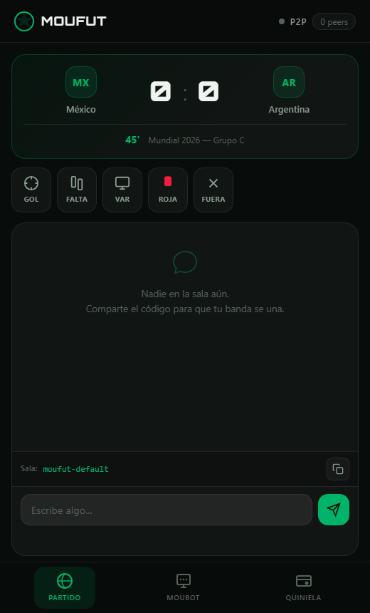

El compañero de partido que funciona aunque se caiga el internet
Chat P2P, comentarista IA on-device y quiniela en USDt — todo sin servidor, sin nube, sin internet.
Todo lo importante sobrevive sin internet
En un estadio lleno la red celular se satura y casi todas las apps de fútbol mueren. MouFut vive justo ahí.
Offline-first
Malla P2P con Pears/Hyperswarm — resistente a censura, sin servidor central.
Privado por diseño
La IA corre en tu dispositivo con QVAC. Tus datos nunca salen.
Dinero entre amigos
Quinielas autocustodiales en USDt liquidadas peer-to-peer con WDK.
Chat, reacciones y marcador — todo P2P
Captura real de la app corriendo: sala de partido, reacciones a jugadas y chat de hinchada, todo antes de que llegue el primer peer.

Las tres capas
| Capa | Stack de Tether | Qué hace |
|---|---|---|
| P2P | Pears (Holepunch) | Descubrimiento de peers, chat de hinchada, reacciones a las jugadas, tablón de predicciones. Sin servidor. |
| IA | QVAC SDK | Comentarista/analista táctico y traducción de voz en vivo, todo on-device. |
| Dinero | WDK | Cartera autocustodial y quiniela en USDt liquidada peer-to-peer. |
Arquitectura
┌─────────────────────────────────────────────┐
│ MouFut │
│ (Bare / Pears runtime, multiplataforma) │
├───────────────┬───────────────┬──────────────┤
│ CAPA P2P │ CAPA IA │ CAPA DINERO │
│ (Pears) │ (QVAC) │ (WDK) │
│ swarm/chat/ │ comentarista/ │ cartera + │
│ tablón │ traductor │ quiniela USDt │
└───────────────┴───────────────┴──────────────┘
Todo corre en el dispositivo. Sin backend propio.
Cómo correrlo
# clonar e instalar git clone https://github.com/ALFA117/moufut.git cd moufut npm install # abre la ventana desktop (Pear/Bare) pear run --dev .
MouFut es una app de escritorio P2P — esta página es solo la presentación del proyecto, no la app en sí. Instrucciones completas en el README del repo.
Antes de que preguntes
¿Necesito internet para usarlo?
Solo para la primera descarga del modelo de IA (QVAC) y de las dependencias. Una vez instalado, el chat P2P, las reacciones y la quiniela funcionan sin internet — solo necesitas que los dispositivos estén en la misma red local (o conectados por hotspot).
¿Es seguro poner dinero en la quiniela?
Las apuestas se firman con Ed25519 y se verifican entre peers antes de contarlas. Las llaves de tu cartera nunca salen del dispositivo. Aun así, es un proyecto de hackathon — no lo uses con dinero que no puedas perder.
¿Qué pasa si no tengo Pear instalado?
MouFut corre sobre el runtime Bare/Pear de Holepunch. Necesitas instalarlo una vez (ver docs.pears.com) antes de pear run --dev . — el README del repo trae el paso a paso.
¿Mis datos se suben a algún servidor?
No hay backend propio. El chat y las predicciones viajan directo entre los dispositivos conectados (Hyperswarm), y la IA corre localmente con QVAC. Cero llamadas a APIs de nube.
¿Funciona en Android o iOS?
Por ahora es una app de escritorio (Windows/Mac/Linux) construida sobre Pear. Llevarla a móvil es parte del roadmap, no del alcance actual del hackathon.